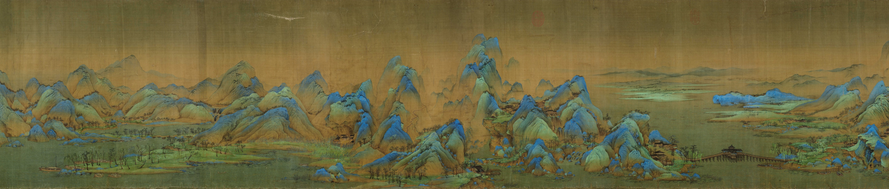

AMCC 5160 · Assignment 3
入卷千里江山
去时是路，回望是景。
十八岁的希孟画完这卷，便从史书里走失了。
今天，换你走进他的画里。
键盘 + 鼠标 · 进画以后，一步一步提示
原作局部图像用于本私人课程原型的对照欣赏；游戏三维场景为创作性诠释。图像来源与版权说明 ↗
开卷 · 调色
入画之前，先定这卷画的质地。
每个人心里的千里江山都不一样。选三样，画会当场变。
此卷
此行所往
卷外 · 对照原作与行旅
一段真实画卷，一段你的行旅
此岸

行者
你在此岸
对岸屋舍
桥亭
来路的一眼

尚未留下
回望的一眼

尚未留下
取景 · 此岸
- 桥
- 船
- 去处
稍作停留
画还在这里。
半山亭 · 题壁
壁上有一笔墨，还没干。
你也写一句？
希孟年十八，半岁画成此卷。
此后，史书里再没有他的名字。
自此，世间再无王希孟。
入卷：千里江山
设计 · 导演 · 取舍 —— Xingyi
3D 模型：Tripo AI 生成，Blender 整理 · 人物动作：Mixamo 自动绑定
概念图与贴图：Codex 图像生成 · 程序：与 Claude Code 协作编写（Three.js） · 声音：浏览器实时合成
原作图像：王希孟《千里江山图》，故宫博物院藏，经 Wikimedia Commons（公有领域）
本作的模型、贴图与代码由 AI 辅助生成；构思、设计与每一处取舍由作者完成。无真人肖像与声音。
卷终 · 山顶
去时是路，回望是景，
登高，是画。
三眼都来自你在画中站的位置与朝向。
试玩记录（给观察者）
游戏化诠释；并非《千里江山图》的逐物复原。王希孟入画为艺术想象。
三维画面未能加载。请尝试桌面 Chrome、Edge 或 Safari 的较新版本。